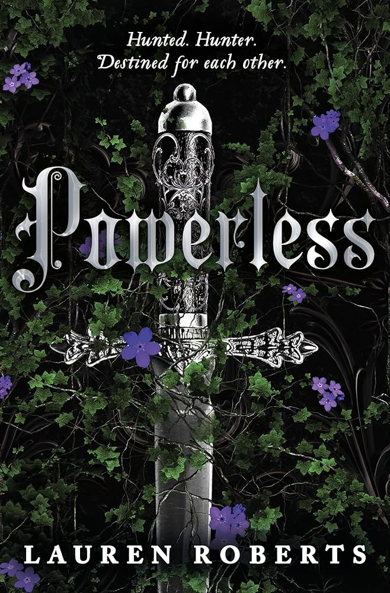
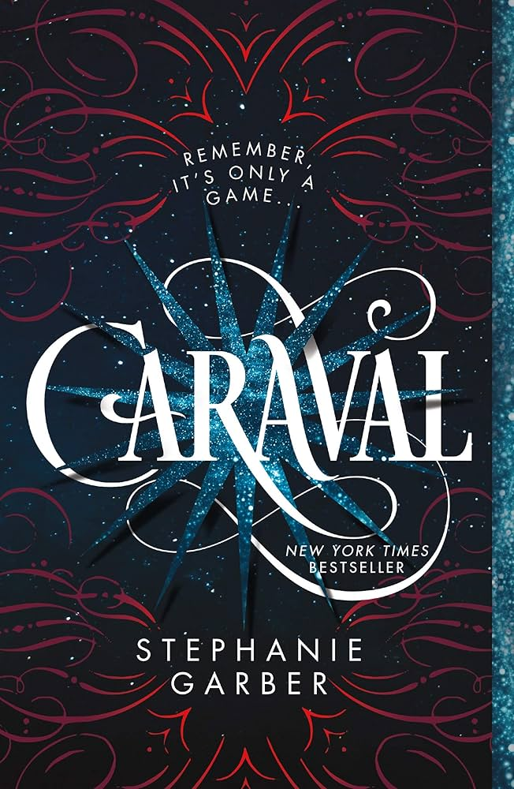
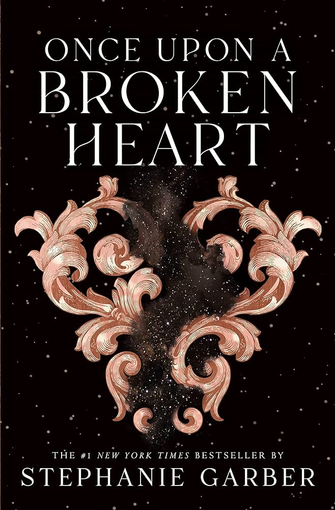
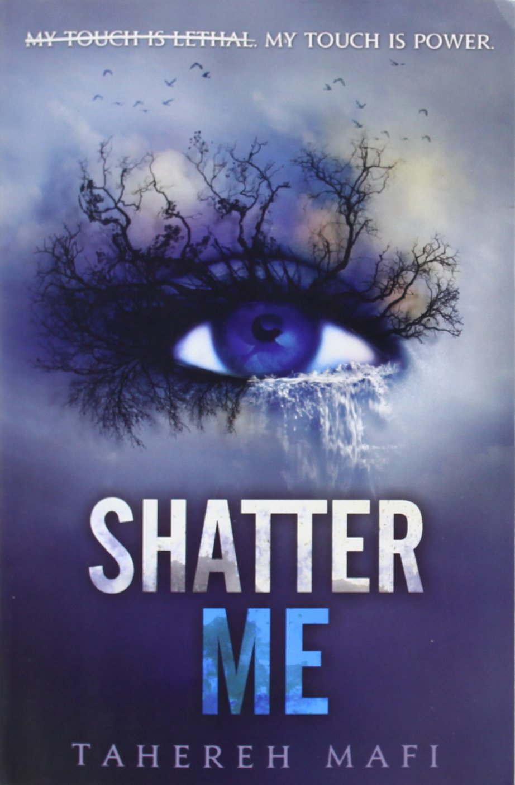
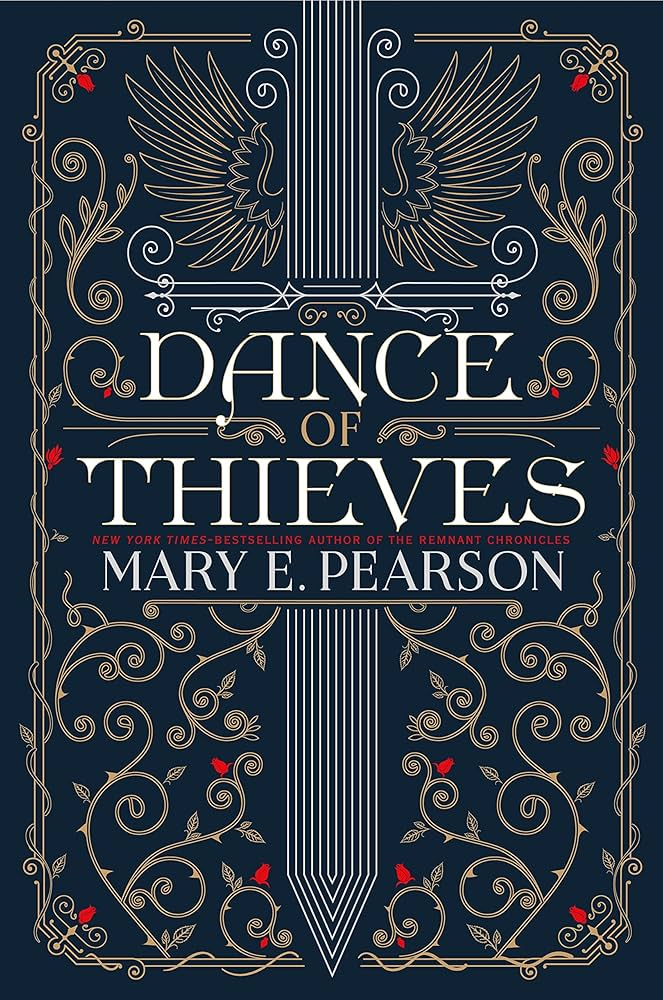
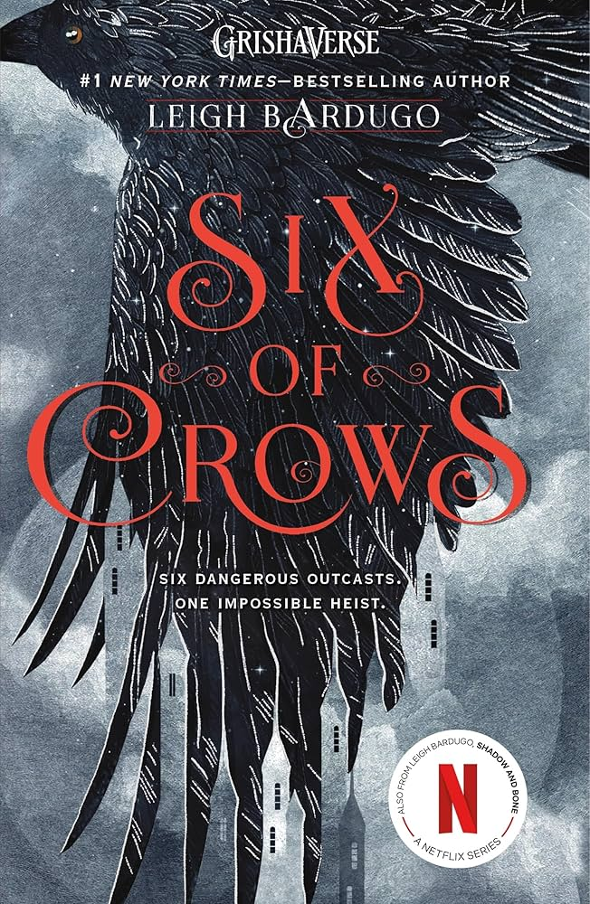

.jpg)

In a kingdom where those without magical abilities are banished, Paedyn Gray hides her lack of power by pretending to be a psychic to survive, only to be thrust into a deadly competition against the very Elites she fears. Paedyn must navigate brutal trials and navigate a forbidden romance with a prince whose duty is to eliminate her kind, making it a high-stakes, enemies-to-lovers story filled with tension. If you love The Hunger Games or a thrilling, witty fantasy with high-stakes pining, you need to read this fast-paced, addictive story.

Caraval is a spellbinding YA fantasy that follows Scarlett Dragna, who finally escapes her cruel father to attend a legendary, week-long magical game where the line between illusion and reality is dangerously blurred. When her sister is kidnapped by the game's mysterious mastermind, Legend, Scarlett must navigate a world of enchantment and deceit, playing to win to save her before the five nights are over. If you love immersive worlds, slow-burn romance, and twisty, suspenseful storytelling, this enchanting read is an absolute must-dive.

Once Upon a Broken Heart by Stephanie Garber is a whimsical yet dangerous YA fantasy that follows Evangeline Fox, a hopeless romantic who makes a reckless deal with the charmingly wicked Prince of Hearts, Jacks, to stop the love of her life from marrying another. As she navigates a magical world of curses, vampires, and a fabled "Magnificent North," she must learn that bargains with immortals come with a high price and that true love is rarely a fairy tale. Filled with high-stakes tension, intoxicating slow-burn romance, and unexpected twists, it is the perfect addictive read for anyone seeking a magical escape with a morally complex hero.

Shatter Me follows Juliette Ferrars, a teenager locked away in a dystopian world because her touch is fatal, who must decide whether to be a weapon for a corrupt government or fight back. This gripping story blends high-stakes action with a tense, addictive love triangle that will keep you guessing until the very last page. With its intense, poetic writing style that uniquely captures a journey from isolation to power, it is a rollercoaster of emotions you won't be able to put down.
The Cruel Prince follows Jude, a mortal girl stolen away to live in the treacherous High Court of Faerie, who must navigate dangerous political games and vicious fae tormentors to find her place. Despite being despised by the immortal nobility, she refuses to bow, choosing instead to hone her skills as a cunning strategist to challenge the wicked Prince Cardan and fight for power. It is a fast-paced, addictive enemies-to-lovers story filled with betrayals, shocking twists, and a relentless protagonist you cannot help but root for.

Dance of Thieves by Mary E. Pearson is a thrilling YA romantasy that follows Kazi, a former street thief turned elite queen's guard, who finds herself forced into an alliance with Jase, the defiant young leader of a powerful outlaw dynasty. Tasked with investigating the forbidden land of the Ballenger family, Kazi must play a dangerous game of cat-and-mouse that spirals into intense angst and a captivating enemies-to-lovers romance where trust could cost them their kingdoms. With its vivid world-building, high-stakes danger, and fierce female characters, this fast-paced adventure is an absolute must-read for fans of character-driven romance and political intrigue.

Six of Crows by Leigh Bardugo is a thrilling fantasy heist novel following six teenage outcasts attempting an impossible mission in the city of Ketterdam. With its complex, diverse characters, intense action, and deep emotional bonds, this duology keeps readers hooked from the first page. You should read it for its masterful world-building, clever plot twists, and unforgettable character dynamics.

Divine Rivals by Rebecca Ross is a sweeping YA fantasy romance that follows two rival journalists, Iris Winnow and Roman Kitt, who fall in love through magical letters while covering a brutal war between gods. Set in a world reminiscent of World War I, the story explores the power of words, the endurance of love amidst grief, and the harsh realities of conflict. It is a must-read for its enchanting, lyrical prose, emotional enemies-to-lovers slow burn, and its ability to balance intense, high-stakes drama with Tender character moments.